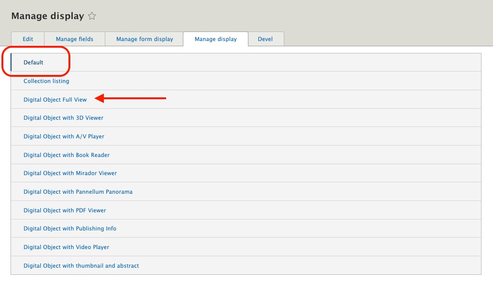
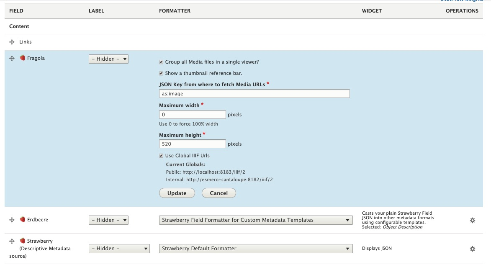

Strawberryfield Formatters
This documentation will give a brief overview of Archipelago's Strawberryfield Formatters and how they work using the default View mode Digital Object Full View as an example.
At a glance
When taking a look at your First Digital Object note that multiple formatters are working together to create this Display ( or View mode). Since "My First Digital Object" is a Photograph the Display being used is Digital Object Full View which, by default, uses formatters to:
- (Red) Create the image viewer where users can zoom in, zoom out, fullscreen and rotate all the images associated with the ADO.
- (Blue) Display the
Object DescriptionandType of Resource. - (Green) Display the Raw JSON Metadata and IIIF Presentation Manifest.

In Greater Detail
When editing an ADO, at the top of the Webform page there is a tab titled Manage display which will take us to where all the Formatters live. Take note that the DISPLAY SETTINGS shown in the screenshot below are using the Default View mode.

Once the page loads the Default View mode is automatically selected. However, because we are editing an object with the Media type Photograph, we need to edit the View mode Digital Object Full View since it is the Default View mode for this Media type.
How to find and configure which View mode is Default per Media type
The ADO Type to View mode Mapping page tells the ADOs which View mode to use by default per Media type. This page can be accessed at yoursite//admin/config/archipelago/viewmode_mapping
Formatters Shipped with Archipelago
- Default
- Collection listing
- Digital Object Full View
- Digital Object with 3D Viewer
- Digital Object with A/V Player
- Digital Object with Book Reader
- Digital Object with Mirador Viewer
- Digital Object with Pannellum Panorama
- Digital Object with PDF Viewer
- Digital Object with Replay.web Webarchive Player
- Digital Object with Replay.web Webarchive with Navbars
- Digital Object with Video Player
- Digital Object with thumbnail and abstract
Default View Mode Mappings by Media Type
| JSON (Media) Type | View Mode Name |
|---|---|
| 1. Video | Digital Object with Video Player |
| 2. 3DModel | Digital Object with 3D Viewer |
| 3. Photograph | Digital Object Full View |
| 4. Thesis | Digital Object with PDF Viewer |
| 5. Panorama | Digital Object with Pannellum Panorama |
| 6. Book | Digital Object with Book Reader |
| 7. Podcast | Digital Object with A/V Player |
| 8. Collection | Collection Listing |
| 9. Article | Digital Object with PDF Viewer |
| 10. Map | Digital Object with Mirador Viewer |
| 11. MusicRecording | Digital Object with A/V Player |
| 12. Sculpture | Digital Object with 3D Viewer |
| 13. VisualArtwork | Digital Object with Video Player |
| 14. Painting | Digital Object with Mirador Viewer |
| 15. WebPage | Digital Object with Replay.web Webarchive Player |
| 16. PanoramaTour | Digital Object with Pannellum Panorama |

There are two sections in Manage display for Digital Object Full View: 1) Content and 2) Disabled. Moving a field into Content means this formatter will be used to the display the ADO in some way. The formatters moved to Disabled are inactive and are subsequently not being used for displaying the ADO.
There are four fields named üçìStrawberry and each one is a copy of the field üçìStrawberry (Descriptive Metadata source). Since the names of the fields do not imply their function, they have been named Strawberry in four different ways (Italiano, Deutsch, Din√© Bizaad, and English) in order to organize and help users visually remember which field is doing what for the Display.
Recall My First Digital Object at beginning of this document where there were 3 sections highlighted in Red, Blue, and Green.
- In Red (
üçìFragola) there is the Strawberry Field Formatter for IIIF media which takes the image stored in S3 to display the photograph with the image viewer. - In Blue (
üçìErdbeere) there is the Strawberry Field Formatter for Custom Metadata Templates which displays the raw JSON metadata using configurable Twig templates. In this example, the default Twig template uses the JSON keytypeto display theType of Resource. - In Green (
üçìStrawberry (Descriptive Metadata)) there is the Strawberry Default Formatter which is used to display the Raw JSON Metadata.

At the end of the day
The decision for how your metadata is displayed is totally in your control.
Under the WIDGET column, there is a quick description/overview of what the formatter is doing.

And by clicking on the gear icon under the OPERATIONS column, all of the options for configuring the formatter are revealed. To use üçìFragola as an example (the Formatter for IIIF media), we can choose which JSON Key is being used to fetch the IIIF Media URLs (found inside the raw JSON being played with Strawberry Default Formatter), the maximum height and width of the viewer, etc.

And then with üçìErdbeere (the Formatter for Custom Metadata Templates) there is the option, among many others, to configure which Twig template the formatter will use for displaying your Metadata.

More information about Managing Metadata Displays with Twig Templates can be found here.
Thank you for reading! Please contact us on our Archipelago Commons Google Group with any questions or feedback.
Return to the Archipelago Documentation main page.